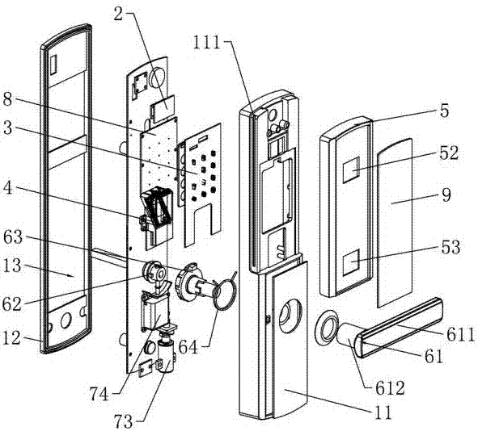

Com o rápido desenvolvimento das smart homes, as fechaduras inteligentes tornaram‑se padrão em casas modernas e espaços comerciais. Mas será que as conhece realmente? Elas vão muito além de simples versões eletrónicas das fechaduras mecânicas — são dispositivos híbridos totalmente inteligentes que se destacam em segurança, conveniência e capacidade de gestão.

1. O que é uma verdadeira fechadura inteligente?
As fechaduras inteligentes são produtos de segurança modernos que diferem das fechaduras mecânicas tradicionais. São os atuadores de um sistema de controlo de acesso, mas alcançam verdadeira inteligência na identificação do utilizador, segurança e gestão:
- Identificação sem chave mecânica: tecnologia avançada de identificação substitui a chave tradicional
- Gestão inteligente: suporta controlo remoto, gestão de permissões e consulta de registos de entrada
- Garantia de segurança: múltiplos mecanismos de proteção, anti‑arrombamento e anti‑abertura técnica
- Operação conveniente: vários modos de entrada para diferentes cenários
2. Diferenças essenciais entre fechaduras inteligentes e mecânicas
Segurança: da defesa passiva à segurança ativa
- Fechadura mecânica: depende da estrutura física, facilmente violável
- Fechadura inteligente: certificação eletrónica + proteção mecânica, dupla segurança
Conveniência: de “tem de levar a chave” a múltiplas opções
- Fechadura mecânica: exige chave física, fácil de perder ou esquecer
- Fechadura inteligente: impressão digital, PIN, cartão, telemóvel e mais
Gestão: de autoridade única à gestão inteligente
- Fechadura mecânica: mudança de autoridade exige troca de cilindro
- Fechadura inteligente: adicionar ou remover utilizadores e permissões a qualquer momento
3. Tecnologias centrais das fechaduras inteligentes
3.1 Biométricos – um salto na segurança
As fechaduras inteligentes utilizam tecnologia biométrica madura para garantir segurança:
- Impressão digital: a mais popular, segura e fácil de usar
- Veias do dedo: lê o padrão dos vasos sanguíneos, impossível de copiar, extremamente segura
- Íris: usa padrões da íris, precisão máxima
3.2 Certificação eletrónica – conveniência alcançada
- PIN: suporta PIN virtual, anti‑espreita
- Cartão inteligente: cartões IC/ID, fácil gestão
- Telemóvel: Bluetooth, NFC, etc.
3.3 Tecnologia de controlo remoto – o núcleo da inteligência
- PIN temporário: códigos com tempo limitado para visitantes
- Desbloqueio remoto: controlo da fechadura via App móvel
- Monitorização de estado: estado da fechadura em tempo real
4. Fatores essenciais ao escolher uma fechadura inteligente
Segurança
- Grau de segurança do cilindro
- Capacidade anti‑abertura técnica
- Mecanismo de emergência
Funcionalidade
- Variedade de modos de entrada
- Nível de inteligência
- Autonomia da bateria
Marca & serviço
- Reputação da marca
- Rede de assistência pós‑venda
- Suporte a atualizações de firmware
5. Mitos comuns & os factos
Mito 1: as fechaduras inteligentes são menos seguras que as mecânicas
Fato: as fechaduras inteligentes oferecem proteção eletrónica + mecânica, muito mais segura do que as fechaduras tradicionais.
Mito 2: as fechaduras inteligentes ficam sem bateria e deixam-no preso
Fato: existem alertas de bateria fraca e métodos de emergência.
Mito 3: as fechaduras inteligentes avariam facilmente
Fato: a tecnologia atual é madura e a taxa de falhas é extremamente baixa.
Resumo técnico
A evolução da tecnologia das fechaduras inteligentes revolucionou a segurança moderna. A transição das fechaduras mecânicas para as inteligentes não é apenas uma atualização técnica, mas um salto na filosofia de segurança. Compreender esta tecnologia e escolher o produto certo proporciona um nível superior de proteção para casas e empresas.